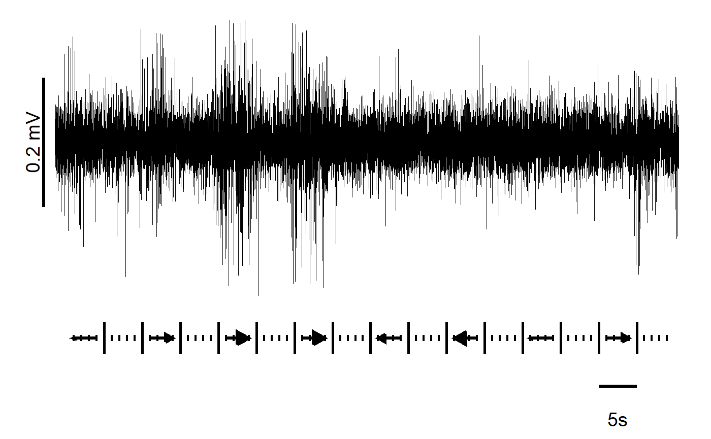
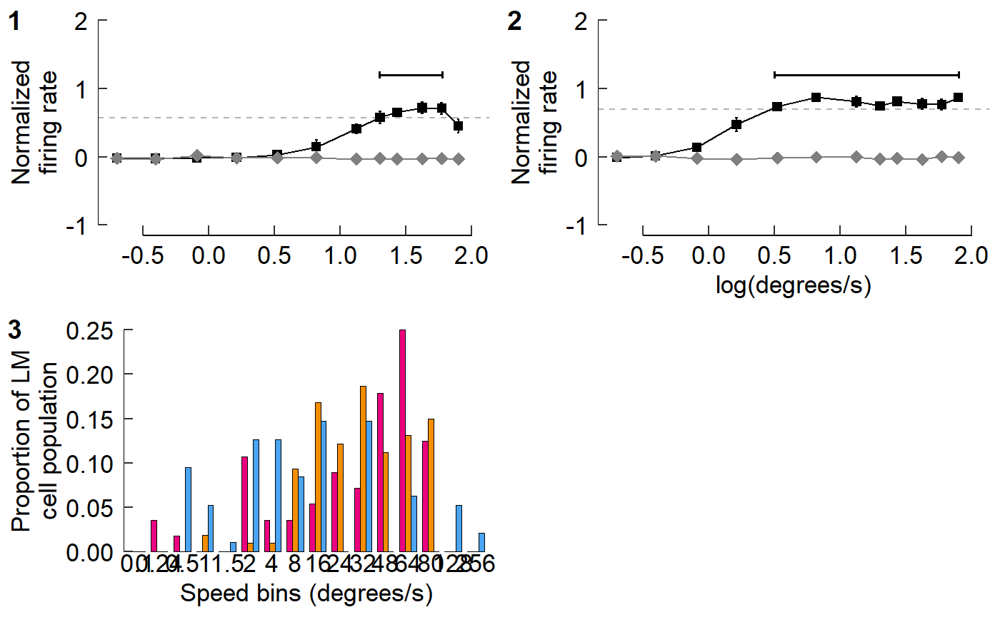
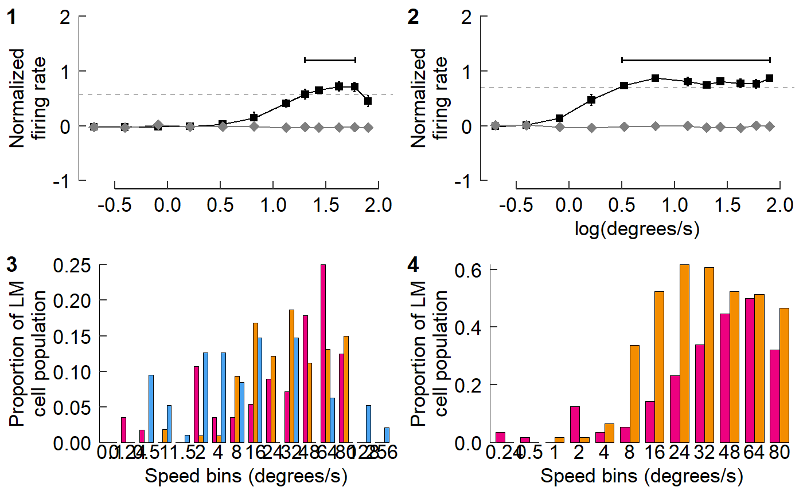
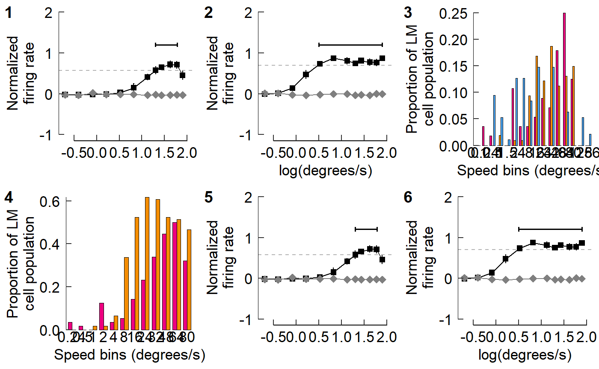
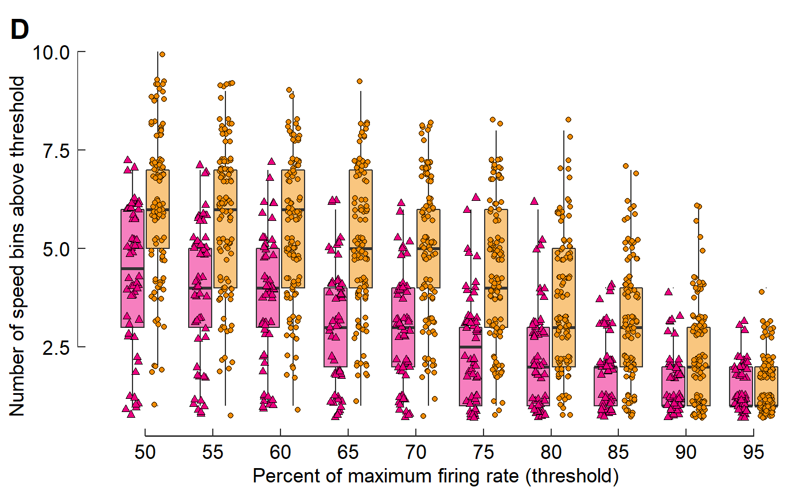
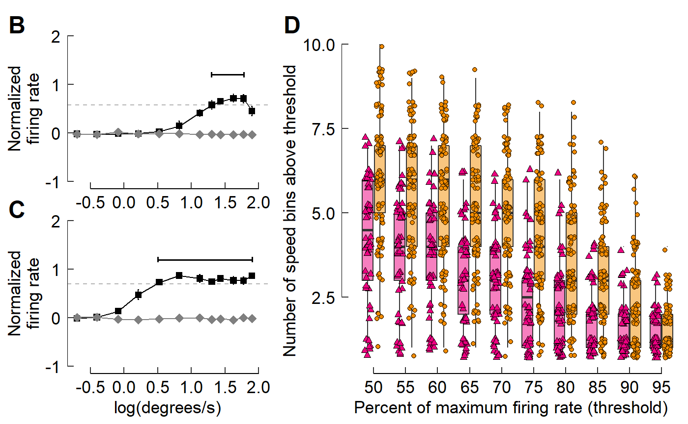
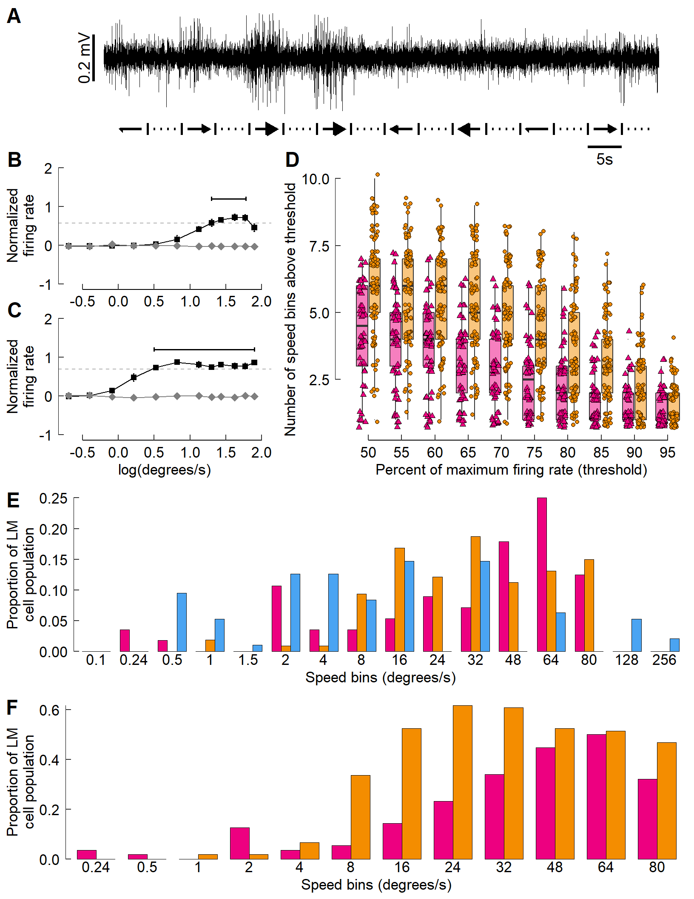

Part 3: Using cowplot to construct multi-panel figures
Vikram B. Baliga, Andrea Gaede and Shreeram Senthivasan
Last updated on 2019-10-27 13:24:06
group-03.RmdIntroduction
This post is part of an R workshop created for BIOL 548L, a graduate-level course on data visualization taught at the University of British Columbia.
All code and contents of this post were written together by Vikram B. Baliga, Andrea Gaede and Shreeram Senthivasan.
There are three groups with increasing levels of difficulty. Please see here for Group 1’s vignette and here for Group 2’s vignette.
Group 3: Make a multi-panel figure with a clear narrative arc
Learning Objectives:
- Plan a sequence of plots that support a declarative statement of a result
- Construct a multi-panel figure using cowplot
- Evaluate which among a diversity of plotting options most effectively communicates a logical argument
Lesson:
#library(ubcBIOL548L)
## Loading packages and data
## If a package is installed, it will be loaded. If any are not, the missing
## package(s) will be installed from CRAN and then loaded.
## Modified from:
## https://vbaliga.github.io/verify-that-r-packages-are-installed-and-loaded/
## First specify the packages of interest
packages <-
c("gapminder",
"ggplot2",
"tidyr",
"dplyr",
"tibble",
"readr",
"forcats",
"readxl",
"ggthemes",
"magick",
"grid",
"cowplot",
"ggmap",
"maps")
## Now load or install&load all
package.check <- lapply(
packages,
FUN = function(x) {
if (!require(x, character.only = TRUE)) {
install.packages(x, dependencies = TRUE,
repos = "http://cran.us.r-project.org")
library(x, character.only = TRUE)
}
}
)Prep work for figure legends:
Bird head icons
icon_hb <- "graphics/hummingbird.png"
icon_zb <- "graphics/zeebie.png"
icon_pg <- "graphics/pigeon.png"
# Colours for the different birds
col_hb <- "#ED0080"
col_zb <- "#F48D00"
col_pg <- "#4AA4F2"
# Parts for drawing legends
rect_hb <- rectGrob(width = 2, height = 1, gp = gpar(fill = col_hb))
rect_hb_t <- rectGrob(
width = 2,
height = 1,
gp = gpar(fill = col_hb, alpha = 0.5)
)
rect_zb <- rectGrob(width = 2, height = 1, gp = gpar(fill = col_zb))
rect_zb_t <- rectGrob(
width = 2,
height = 1,
gp = gpar(fill = col_zb, alpha = 0.5)
)
rect_pg <- rectGrob(width = 2, height = 1, gp = gpar(fill = col_pg))
point_hb <- pointsGrob(
x = 0,
y = 0,
pch = 24,
size = unit(0.5, units = "char"),
gp = gpar(fill = col_hb)
)
point_zb <- pointsGrob(
x = 0,
y = 0,
pch = 21,
size = unit(0.5, units = "char"),
gp = gpar(fill = col_zb)
)Multi-panel figures can be driven by narrative
one example: raw data -> processing -> analyses -> punchline
We will used Figure 3 from Gaede et al. 2017 paper (Current Biology) as an example.
This study examined how neurons in the lentiformis mesencephali (LM) brain region of three species of birds respond to visual motion across the retina.
This figure shows that in hummingbirds, these neurons respond to faster visual motion speeds than those in zebra finches or pigeons.
Figure 3 Panel A:
Re-create panel A from Gaede et al. 2017
# First, import data
fig_A <-
read_csv("./Fig3A_data.csv") %>%
# Now take every nth data point (produces plot faster)
filter(row_number() %% 5 == 0) %>%
# Clean outliers
filter(abs(spike) < 7 * sd(spike)) %>%
ggplot(aes(time, spike)) +
geom_path(size = 0.1) +
theme_void() +
# Y-axis vertical scale
annotate(geom = "segment",
y = 0.00278 - 0.01, yend = 0.00278 + 0.01,
x = -1.5, xend = -1.5,
lwd = 1.2) +
# Y-axis scale label
annotate(geom = "text", y = 0.00278, x = -3,
label = "0.2 mV", size = 5, angle = 90) +
# X-axis scale bar
annotate(geom = "segment",
y = -0.035, yend = -0.035,
x = 70 + 1.5, xend = 75 + 1.5,
lwd = 1.2) +
# X-axis scale label
annotate(geom = "text", y = -0.04, x = 74,
label = "5s", size = 5) +
# Large ticks
annotate(geom = "segment",
y = -0.03, yend = -0.025,
x = 1.5 + 1:15 * 5, xend = 1.5 + 1:15 * 5,
lwd = 1) +
# Small ticks within large ticks
annotate(geom = "segment",
y = -0.027, yend = -0.028,
x = 1.5 + 1:79, xend = 1.5 + 1:79,
lwd = 0.8) +
# Arrows
annotate(
geom = "segment",
y = -0.0275,
yend = -0.0275,
x = -10 + 2.5 + 1:8 * 10,
xend = -10 + 5.5 + 1:8 * 10,
lwd = 1.2,
arrow = arrow(
# Control the direction of each arrow. first = left; last = right
ends = c("first", "last", "last", "last",
"first", "first", "first", "last"),
# Control the size of each arrow head
length = unit(c(1, 6, 10, 10, 6, 10, 1, 6), "pt"),
type = "closed"
),
# Use 'sharp' arrow heads
linejoin = 'mitre')
#> Parsed with column specification:
#> cols(
#> time = col_double(),
#> stim = col_double(),
#> spike = col_double()
#> )
fig_A
Create and save panels as separate ggplot objects


Intro to cowplot
We’ll go over plot_grid() basics.draw_image() & draw_grob() can also be used with ggplot() & plot_grid()
Basics
- Multiple panels can be combined via
cowplot::plot_grid() - Each panel should be saved as a separate ggplot object beforehand and then each will be fed in as an argument to
plot_grid()
Plot objects can be added sequentially

By default, additional panels are initially added within the same row.plot_grid() then tends to prefer to have ncol = nrow as best as possible:





This looks okay, but we may prefer to have the plots arranged in one column.
Let’s first just focus on panels E and F.

Cowplot also allows you to add labels to panels as you’d see in a journal article.

See the arguments of cowplot::plot_grid() to see how labels can be adjusted.
We’ll adjust the size and (temporarily) change to a serif font.

Re-create Gaede et al. 2017 Fig 3
Let’s try to build Fig 3 from Gaede et al. 2017
The layout of the figure is complex; nrows and ncols can’t be set easily. Luckily we can build sets of panels together, save each one, then stitch it all together at the end.
Let’s start with panels E and F.
cow_EF <- plot_grid(fig_E, fig_F,
ncol = 1,
labels = c("E","F"),
label_size = 18,
label_fontfamily = "sans")
cow_EF
For panel A, we’ll adjust the padding around the margin.
Within the argument plot.margin, the order is top, right, bottom, left; think TRouBLe (T,R,B,L)
fig_A <- fig_A + theme(plot.margin = unit(c(5.5, 5.5, 0, 5.5), units = "pt"))
cow_A <- plot_grid(NULL, fig_A,
rel_widths = c(0.07, 0.93),
nrow = 1,
labels = c("A",""),
label_size = 18,
label_fontfamily = "sans")
cow_A
Panels B and C
When combining B and C, we should note that C has an x-axis label but B does not. Therefore, we will add blank plots (NULL) as padding and then adjust the relative heights to fit things comfortably. We still need to supply 4 labels, so "" will be used for blank plots.
cow_BC <- plot_grid(NULL, fig_B, NULL, fig_C,
rel_heights = c(0.1, 1, -0.15, 1),
ncol = 1,
label_y = 1.07,
labels = c("","B","","C"),
label_size = 18,
label_fontfamily = "sans")
cow_BC
#> Warning: Removed 1 rows containing missing values (geom_text).
Panel D
Similarly, with panel D, we’ll add a NULL object to the cowplot and adjust the relative heights to the proportions we’d like.
fig_D <- fig_D + labs(y = "Number of speed bins above threshold ")
cow_D <- plot_grid(NULL, fig_D,
rel_heights = c(0.1, 1.85),
ncol = 1,
label_y = 1 + 0.07 /1.85,
labels = c("","D"),
label_size = 18,
label_fontfamily = "sans")
#> Warning: Removed 770 rows containing non-finite values (stat_boxplot).
#> Warning: Removed 770 rows containing missing values (geom_point).
cow_D
#> Warning: Removed 1 rows containing missing values (geom_text).
You can cowplot multiple cowplots
cow_BCD <- plot_grid(cow_BC, cow_D,
rel_widths = c(2,3),
nrow = 1)
#> Warning: Removed 1 rows containing missing values (geom_text).
#> Warning: Removed 1 rows containing missing values (geom_text).
cow_BCD
Now combine all the panels together:
It may help to specify the dimensions of the plot window to ensure that the plot is made with correct overall proportions.
try(dev.off(), silent = T)dev.new(width = 8, height = 11, units = "in")
Now for the plot itself:
cow_A2F <- plot_grid(cow_A, NULL, cow_BCD, cow_EF,
ncol = 1,
# A negative rel_height shrinks space between elements
rel_heights = c(1.2, -0.2, 2.5, 3),
label_size = 18,
label_fontfamily = "sans")
cow_A2F
Adding icons to a multipanel plot:
The bird heads and other legend elements are conspicuously absent. The cowplot::draw_image() function allows for an image to be placed on the canvas, which we’ll use for the bird heads.
Similarly, cowplot::draw_grob() places grobs (GRaphical OBjects). We’ll use this to add in colored rectangles for the legends.
Each image’s (or grob’s) location is specified with x- and y- coordinates. Each runs from 0 to 1, with (0,0) being the lower left corner of the canvas.
At the moment, vectorization of the code you see below doesn’t seem possible. It’s a bit tedious (and un-tidy!) but it works!